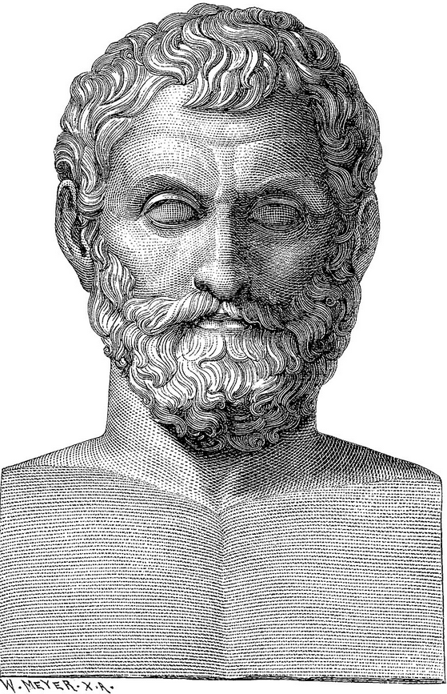
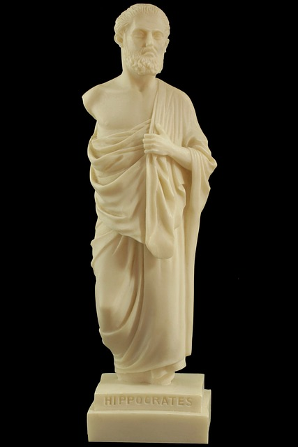

Aristotle
Ancient Greek philosopher
and polymath (384 - 322 BC)
click on image to read more
Platon
Ancient Greek philosopher
(428- 348 BC)
click on image to read more
Pythagoras
Ancient Greek philosopher
(pre-Socratics) (570 - 510 BC)
click on image to read more

Thales of Milet
Ancient Greek philosopher
( 624 - 548 BC)
click on image to read more

Hippocrates of Kos
Greek physician and philosopher
( 460 - 370 BC)
click on image to read more